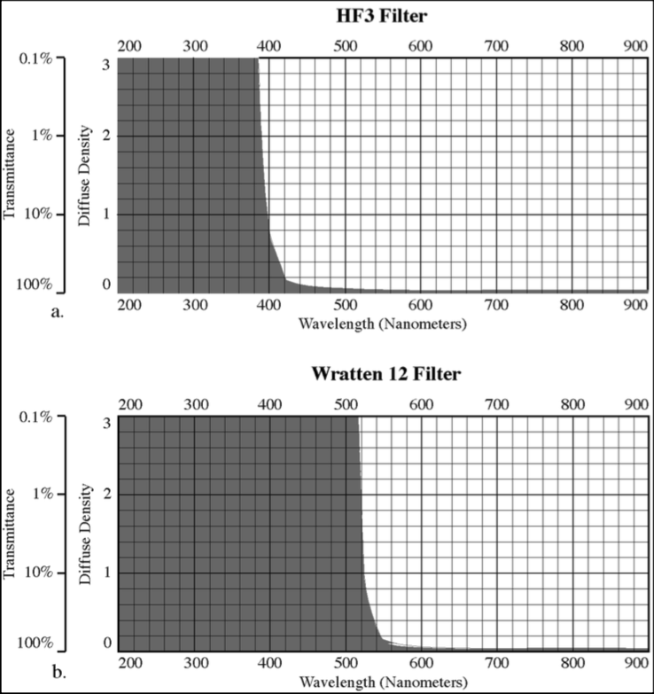
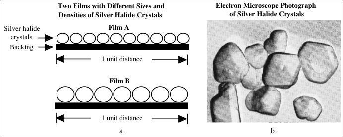
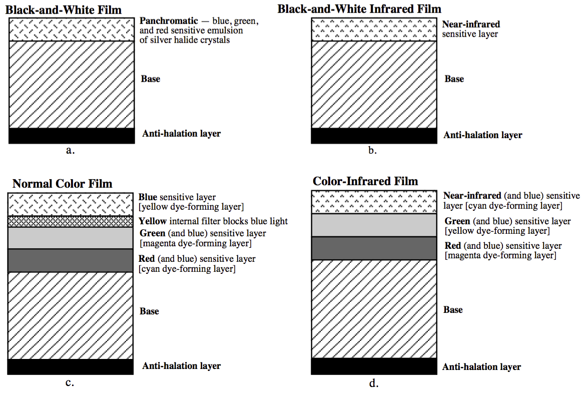
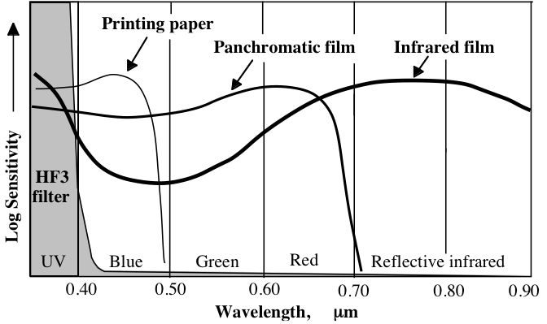
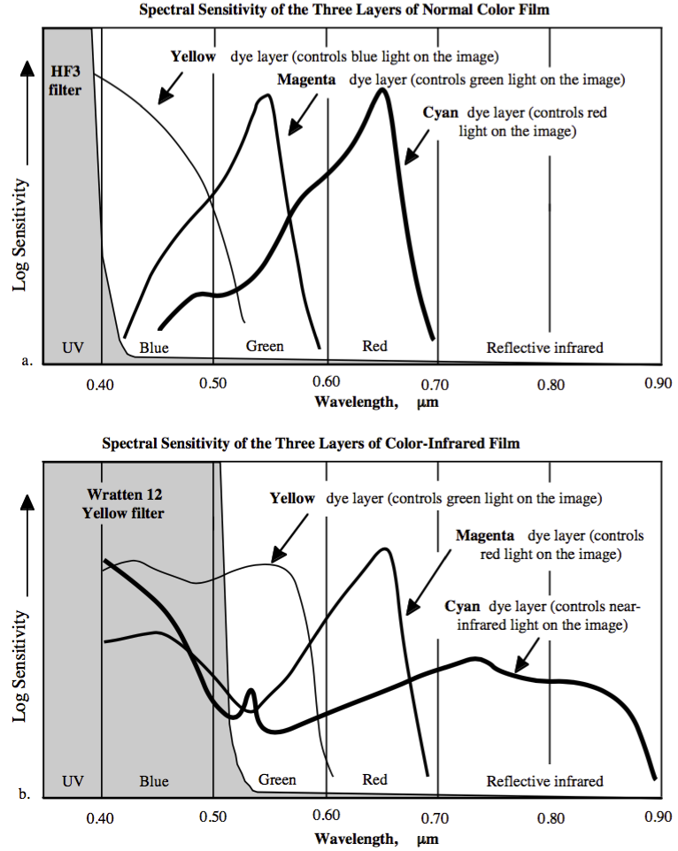
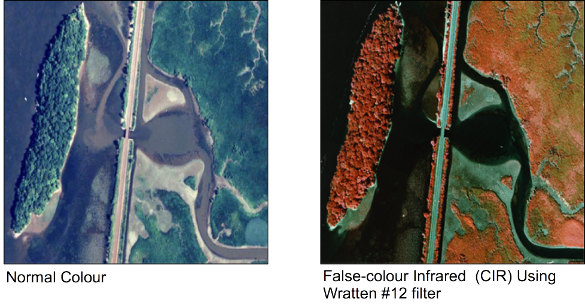
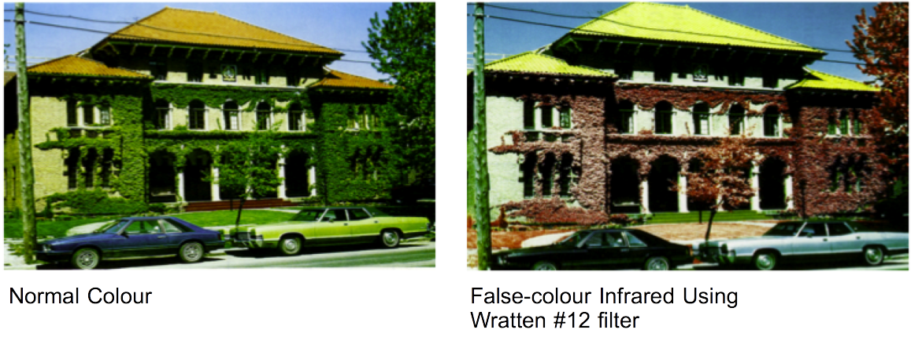
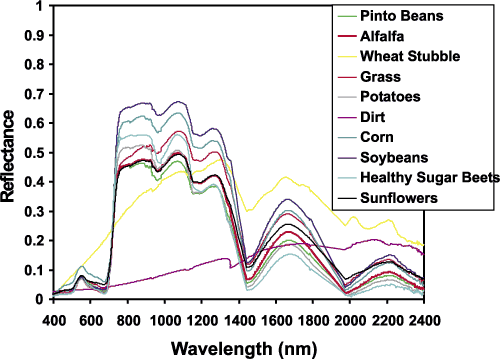

GEOG*2420
The Earth From Space
Filters and Photographic Film
John Lindsay
Fall 2015
Readings
Jensen Chapter 4, pg. 107-124
Don't worry about the formulas on page 116.

(source: Jensen, 2006)
Photographic Film
The density and size of silver halide crystals affect film speed and spatial
resolution. The larger the crystals, the higher the sensitivity but the coarser
the resolution (i.e. reduced sharpness).

(source: Jensen, 2006)
Film Types
- Black & white orthochromatic—sensitive to blue and green light (to 0.6 μm)
- Black & white panchromatic (to 0.7 μm)
- Black & white infrared (to 0.9 μm)
- Standard (normal) colour
- Colour infrared (CIR)

(source: Jensen, 2006)
Sensitivity of Selected Black & White Films and Printing Paper

(source: Jensen, 2006)
Spectral Sensitivity of Normal Colour and Colour-Infrared Film

(source: Jensen, 2006)

(source: Jensen, 2006)

(source: Jensen, 2006)
Advantages of pan and normal colour film
- More natural to the human eye than infrared
- More detail is apparent in areas of shadow
- Better spatial resolution
- Better penetration of water bodies
Advantages of B&W Infrared and CIR
- Better penetration of haze
- Emphasizes water and moist areas (good for mapping water bodies)
- Good differentiation between hardwoods and conifers
- Sick, dying, and stressed vegetation is more easily detected, especially on CIR
Example of spectral signatures for foliage across the visible and near IR

(source: Unknown)